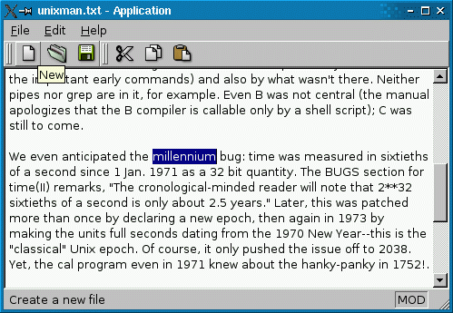

Пример "Application"Файлы:
Изображения:
The Application example shows how to implement a standard GUI application with menus, toolbars, and a status bar. The example itself is a simple text editor program built around QPlainTextEdit.  Nearly all of the code for the Application example is in the MainWindow class, which inherits QMainWindow. QMainWindow provides the framework for windows that have menus, toolbars, dock windows, and a status bar. The application provides File, Edit, and Help entries in the menu bar, with the following popup menus:
The status bar at the bottom of the main window shows a description of the menu item or toolbar button under the cursor. To keep the example simple, recently opened files aren't shown in the File menu, even though this feature is desired in 90% of applications. The Recent Files example shows how to implement this. Furthermore, this example can only load one file at a time. The SDI and MDI examples shows how to lift these restrictions. Определение класса MainWindowВот определение класса: class MainWindow : public QMainWindow
{
Q_OBJECT
public:
MainWindow();
protected:
void closeEvent(QCloseEvent *event);
private slots:
void newFile();
void open();
bool save();
bool saveAs();
void about();
void documentWasModified();
private:
void createActions();
void createMenus();
void createToolBars();
void createStatusBar();
void readSettings();
void writeSettings();
bool maybeSave();
void loadFile(const QString &fileName);
bool saveFile(const QString &fileName);
void setCurrentFile(const QString &fileName);
QString strippedName(const QString &fullFileName);
QPlainTextEdit *textEdit;
QString curFile;
QMenu *fileMenu;
QMenu *editMenu;
QMenu *helpMenu;
QToolBar *fileToolBar;
QToolBar *editToolBar;
QAction *newAct;
QAction *openAct;
QAction *saveAct;
QAction *saveAsAct;
QAction *exitAct;
QAction *cutAct;
QAction *copyAct;
QAction *pasteAct;
QAction *aboutAct;
QAction *aboutQtAct;
};
The public API is restricted to the constructor. In the protected section, we reimplement QWidget::closeEvent() to detect when the user attempts to close the window, and warn the user about unsaved changes. In the private slots section, we declare slots that correspond to menu entries, as well as a mysterious documentWasModified() slot. Finally, in the private section of the class, we have various members that will be explained in due time. Реализация класса MainWindow#include <QtGui> #include "mainwindow.h" We start by including <QtGui>, a header file that contains the definition of all classes in the QtCore and QtGui libraries. This saves us from the trouble of having to include every class individually. We also include mainwindow.h. You might wonder why we don't include <QtGui> in mainwindow.h and be done with it. The reason is that including such a large header from another header file can rapidly degrade performances. Here, it wouldn't do any harm, but it's still generally a good idea to include only the header files that are strictly necessary from another header file. MainWindow::MainWindow()
{
textEdit = new QPlainTextEdit;
setCentralWidget(textEdit);
createActions();
createMenus();
createToolBars();
createStatusBar();
readSettings();
connect(textEdit->document(), SIGNAL(contentsChanged()),
this, SLOT(documentWasModified()));
setCurrentFile("");
setUnifiedTitleAndToolBarOnMac(true);
}
In the constructor, we start by creating a QPlainTextEdit widget as a child of the main window (the this object). Then we call QMainWindow::setCentralWidget() to tell that this is going to be the widget that occupies the central area of the main window, between the toolbars and the status bar. Then we call createActions(), createMenus(), createToolBars(), and createStatusBar(), four private functions that set up the user interface. After that, we call readSettings() to restore the user's preferences. We establish a signal-slot connection between the QPlainTextEdit's document object and our documentWasModified() slot. Whenever the user modifies the text in the QPlainTextEdit, we want to update the title bar to show that the file was modified. At the end, we set the window title using the private setCurrentFile() function. We'll come back to this later. void MainWindow::closeEvent(QCloseEvent *event)
{
if (maybeSave()) {
writeSettings();
event->accept();
} else {
event->ignore();
}
}
When the user attempts to close the window, we call the private function maybeSave() to give the user the possibility to save pending changes. The function returns true if the user wants the application to close; otherwise, it returns false. In the first case, we save the user's preferences to disk and accept the close event; in the second case, we ignore the close event, meaning that the application will stay up and running as if nothing happened. void MainWindow::newFile()
{
if (maybeSave()) {
textEdit->clear();
setCurrentFile("");
}
}
The newFile() slot is invoked when the user selects File|New from the menu. We call maybeSave() to save any pending changes and if the user accepts to go on, we clear the QPlainTextEdit and call the private function setCurrentFile() to update the window title and clear the windowModified flag. void MainWindow::open()
{
if (maybeSave()) {
QString fileName = QFileDialog::getOpenFileName(this);
if (!fileName.isEmpty())
loadFile(fileName);
}
}
The open() slot is invoked when the user clicks File|Open. We pop up a QFileDialog asking the user to choose a file. If the user chooses a file (i.e., fileName is not an empty string), we call the private function loadFile() to actually load the file. bool MainWindow::save()
{
if (curFile.isEmpty()) {
return saveAs();
} else {
return saveFile(curFile);
}
}
The save() slot is invoked when the user clicks File|Save. If the user hasn't provided a name for the file yet, we call saveAs(); otherwise, we call the private function saveFile() to actually save the file. bool MainWindow::saveAs()
{
QString fileName = QFileDialog::getSaveFileName(this);
if (fileName.isEmpty())
return false;
return saveFile(fileName);
}
In saveAs(), we start by popping up a QFileDialog asking the user to provide a name. If the user clicks Cancel, the returned file name is empty, and we do nothing. void MainWindow::about()
{
QMessageBox::about(this, tr("About Application"),
tr("The <b>Application</b> example demonstrates how to "
"write modern GUI applications using Qt, with a menu bar, "
"toolbars, and a status bar."));
}
The application's About box is done using one statement, using the QMessageBox::about() static function and relying on its support for an HTML subset. The tr() call around the literal string marks the string for translation. It is a good habit to call tr() on all user-visible strings, in case you later decide to translate your application to other languages. The Internationalization with Qt overview convers tr() in more detail. void MainWindow::documentWasModified()
{
setWindowModified(textEdit->document()->isModified());
}
The documentWasModified() slot is invoked each time the text in the QPlainTextEdit changes because of user edits. We call QWidget::setWindowModified() to make the title bar show that the file was modified. How this is done varies on each platform. void MainWindow::createActions()
{
newAct = new QAction(QIcon(":/images/new.png"), tr("&New"), this);
newAct->setShortcuts(QKeySequence::New);
newAct->setStatusTip(tr("Create a new file"));
connect(newAct, SIGNAL(triggered()), this, SLOT(newFile()));
openAct = new QAction(QIcon(":/images/open.png"), tr("&Open..."), this);
openAct->setShortcuts(QKeySequence::Open);
openAct->setStatusTip(tr("Open an existing file"));
connect(openAct, SIGNAL(triggered()), this, SLOT(open()));
...
aboutQtAct = new QAction(tr("About &Qt"), this);
aboutQtAct->setStatusTip(tr("Show the Qt library's About box"));
connect(aboutQtAct, SIGNAL(triggered()), qApp, SLOT(aboutQt()));
The createActions() private function, which is called from the MainWindow constructor, creates QActions. The code is very repetitive, so we show only the actions corresponding to File|New, File|Open, and Help|About Qt. A QAction is an object that represents one user action, such as saving a file or invoking a dialog. An action can be put in a QMenu or a QToolBar, or both, or in any other widget that reimplements QWidget::actionEvent(). An action has a text that is shown in the menu, an icon, a shortcut key, a tooltip, a status tip (shown in the status bar), a "What's This?" text, and more. It emits a triggered() signal whenever the user invokes the action (e.g., by clicking the associated menu item or toolbar button). We connect this signal to a slot that performs the actual action. The code above contains one more idiom that must be explained. For some of the actions, we specify an icon as a QIcon to the QAction constructor. The QIcon constructor takes the file name of an image that it tries to load. Here, the file name starts with :. Such file names aren't ordinary file names, but rather path in the executable's stored resources. We'll come back to this when we review the application.qrc file that's part of the project. cutAct->setEnabled(false);
copyAct->setEnabled(false);
connect(textEdit, SIGNAL(copyAvailable(bool)),
cutAct, SLOT(setEnabled(bool)));
connect(textEdit, SIGNAL(copyAvailable(bool)),
copyAct, SLOT(setEnabled(bool)));
}
The Edit|Cut and Edit|Copy actions must be available only when the QPlainTextEdit contains selected text. We disable them by default and connect the QPlainTextEdit::copyAvailable() signal to the QAction::setEnabled() slot, ensuring that the actions are disabled when the text editor has no selection. void MainWindow::createMenus()
{
fileMenu = menuBar()->addMenu(tr("&File"));
fileMenu->addAction(newAct);
fileMenu->addAction(openAct);
fileMenu->addAction(saveAct);
fileMenu->addAction(saveAsAct);
fileMenu->addSeparator();
fileMenu->addAction(exitAct);
editMenu = menuBar()->addMenu(tr("&Edit"));
editMenu->addAction(cutAct);
editMenu->addAction(copyAct);
editMenu->addAction(pasteAct);
menuBar()->addSeparator();
helpMenu = menuBar()->addMenu(tr("&Help"));
helpMenu->addAction(aboutAct);
helpMenu->addAction(aboutQtAct);
}
Creating actions isn't sufficient to make them available to the user; we must also add them to the menu system. This is what createMenus() does. We create a File, an Edit, and a Help menu. QMainWindow::menuBar() lets us access the window's menu bar widget. We don't have to worry about creating the menu bar ourselves; the first time we call this function, the QMenuBar is created. Just before we create the Help menu, we call QMenuBar::addSeparator(). This has no effect for most widget styles (e.g., Windows and Mac OS X styles), but for Motif-based styles this makes sure that Help is pushed to the right side of the menu bar. Try running the application with various styles and see the results: application -style=windows application -style=motif application -style=cde Let's now review the toolbars: void MainWindow::createToolBars()
{
fileToolBar = addToolBar(tr("File"));
fileToolBar->addAction(newAct);
fileToolBar->addAction(openAct);
fileToolBar->addAction(saveAct);
editToolBar = addToolBar(tr("Edit"));
editToolBar->addAction(cutAct);
editToolBar->addAction(copyAct);
editToolBar->addAction(pasteAct);
}
Creating toolbars is very similar to creating menus. The same actions that we put in the menus can be reused in the toolbars. void MainWindow::createStatusBar()
{
statusBar()->showMessage(tr("Ready"));
}
QMainWindow::statusBar() returns a pointer to the main window's QStatusBar widget. Like with QMainWindow::menuBar(), the widget is automatically created the first time the function is called. void MainWindow::readSettings()
{
QSettings settings("Trolltech", "Application Example");
QPoint pos = settings.value("pos", QPoint(200, 200)).toPoint();
QSize size = settings.value("size", QSize(400, 400)).toSize();
resize(size);
move(pos);
}
The readSettings() function is called from the constructor to load the user's preferences and other application settings. The QSettings class provides a high-level interface for storing settings permanently on disk. On Windows, it uses the (in)famous Windows registry; on Mac OS X, it uses the native XML-based CFPreferences API; on Unix/X11, it uses text files. The QSettings constructor takes arguments that identify your company and the name of the product. This ensures that the settings for different applications are kept separately. We use QSettings::value() to extract the value of the "pos" and "size" settings. The second argument to QSettings::value() is optional and specifies a default value for the setting if there exists none. This value is used the first time the application is run. When restoring the position and size of a window, it's important to call QWidget::resize() before QWidget::move(). The reason why is given in the Window Geometry overview. void MainWindow::writeSettings()
{
QSettings settings("Trolltech", "Application Example");
settings.setValue("pos", pos());
settings.setValue("size", size());
}
The writeSettings() function is called from closeEvent(). Writing settings is similar to reading them, except simpler. The arguments to the QSettings constructor must be the same as in readSettings(). bool MainWindow::maybeSave()
{
if (textEdit->document()->isModified()) {
QMessageBox::StandardButton ret;
ret = QMessageBox::warning(this, tr("Application"),
tr("The document has been modified.\n"
"Do you want to save your changes?"),
QMessageBox::Save | QMessageBox::Discard | QMessageBox::Cancel);
if (ret == QMessageBox::Save)
return save();
else if (ret == QMessageBox::Cancel)
return false;
}
return true;
}
The maybeSave() function is called to save pending changes. If there are pending changes, it pops up a QMessageBox giving the user to save the document. The options are QMessageBox::Yes, QMessageBox::No, and QMessageBox::Cancel. The Yes button is made the default button (the button that is invoked when the user presses Return) using the QMessageBox::Default flag; the Cancel button is made the escape button (the button that is invoked when the user presses Esc) using the QMessageBox::Escape flag. The maybeSave() function returns true in all cases, except when the user clicks Cancel. The caller must check the return value and stop whatever it was doing if the return value is false. void MainWindow::loadFile(const QString &fileName)
{
QFile file(fileName);
if (!file.open(QFile::ReadOnly | QFile::Text)) {
QMessageBox::warning(this, tr("Application"),
tr("Cannot read file %1:\n%2.")
.arg(fileName)
.arg(file.errorString()));
return;
}
QTextStream in(&file);
#ifndef QT_NO_CURSOR
QApplication::setOverrideCursor(Qt::WaitCursor);
#endif
textEdit->setPlainText(in.readAll());
#ifndef QT_NO_CURSOR
QApplication::restoreOverrideCursor();
#endif
setCurrentFile(fileName);
statusBar()->showMessage(tr("File loaded"), 2000);
}
In loadFile(), we use QFile and QTextStream to read in the data. The QFile object provides access to the bytes stored in a file. We start by opening the file in read-only mode. The QFile::Text flag indicates that the file is a text file, not a binary file. On Unix and Mac OS X, this makes no difference, but on Windows, it ensures that the "\r\n" end-of-line sequence is converted to "\n" when reading. If we successfully opened the file, we use a QTextStream object to read in the data. QTextStream automatically converts the 8-bit data into a Unicode QString and supports various encodings. If no encoding is specified, QTextStream assumes the file is written using the system's default 8-bit encoding (for example, Latin-1; see QTextCodec::codecForLocale() for details). Since the call to QTextStream::readAll() might take some time, we set the cursor to be Qt::WaitCursor for the entire application while it goes on. At the end, we call the private setCurrentFile() function, which we'll cover in a moment, and we display the string "File loaded" in the status bar for 2 seconds (2000 milliseconds). bool MainWindow::saveFile(const QString &fileName)
{
QFile file(fileName);
if (!file.open(QFile::WriteOnly | QFile::Text)) {
QMessageBox::warning(this, tr("Application"),
tr("Cannot write file %1:\n%2.")
.arg(fileName)
.arg(file.errorString()));
return false;
}
QTextStream out(&file);
#ifndef QT_NO_CURSOR
QApplication::setOverrideCursor(Qt::WaitCursor);
#endif
out << textEdit->toPlainText();
#ifndef QT_NO_CURSOR
QApplication::restoreOverrideCursor();
#endif
setCurrentFile(fileName);
statusBar()->showMessage(tr("File saved"), 2000);
return true;
}
Saving a file is very similar to loading one. Here, the QFile::Text flag ensures that on Windows, "\n" is converted into "\r\n" to conform to the Windows convension. void MainWindow::setCurrentFile(const QString &fileName)
{
curFile = fileName;
textEdit->document()->setModified(false);
setWindowModified(false);
QString shownName = curFile;
if (curFile.isEmpty())
shownName = "untitled.txt";
setWindowFilePath(shownName);
}
The setCurrentFile() function is called to reset the state of a few variables when a file is loaded or saved, or when the user starts editing a new file (in which case fileName is empty). We update the curFile variable, clear the QTextDocument::modified flag and the associated QWidget:windowModified flag, and update the window title to contain the new file name (or untitled.txt). The strippedName() function call around curFile in the QWidget::setWindowTitle() call shortens the file name to exclude the path. Here's the function: QString MainWindow::strippedName(const QString &fullFileName)
{
return QFileInfo(fullFileName).fileName();
}
Функция main()The main() function for this application is typical of applications that contain one main window: #include <QApplication>
#include "mainwindow.h"
int main(int argc, char *argv[])
{
Q_INIT_RESOURCE(application);
QApplication app(argc, argv);
app.setOrganizationName("Trolltech");
app.setApplicationName("Application Example");
MainWindow mainWin;
mainWin.show();
return app.exec();
}
Файл ресурсовAs you will probably recall, for some of the actions, we specified icons with file names starting with : and mentioned that such file names aren't ordinary file names, but path in the executable's stored resources. These resources are compiled The resources associated with an application are specified in a .qrc file, an XML-based file format that lists files on the disk. Here's the application.qrc file that's used by the Application example: <!DOCTYPE RCC><RCC version="1.0">
<qresource>
<file>images/copy.png</file>
<file>images/cut.png</file>
<file>images/new.png</file>
<file>images/open.png</file>
<file>images/paste.png</file>
<file>images/save.png</file>
</qresource>
</RCC>
The .png files listed in the application.qrc file are files that are part of the Application example's source tree. Paths are relative to the directory where the application.qrc file is located (the mainwindows/application directory). The resource file must be mentioned in the application.pro file so that qmake knows about it: RESOURCES = application.qrc qmake произведёт make-правила для генерации фалйа с именем qrc_application.cpp, который компонуется с приложением. Этот файл содержит все данные для изображений и других ресурсов как статические массивы C++ сжатых двоичных данных. See The Qt Resource System for more information about resources. X
|

)window.location='http://www.doc.crossplatform.ru/qt/4.7.x/images/used-in-examples/mainwindows/application/images/copy.png'){kind=link}
)window.location='http://www.doc.crossplatform.ru/qt/4.7.x/images/used-in-examples/mainwindows/application/images/cut.png'){kind=link}
)window.location='http://www.doc.crossplatform.ru/qt/4.7.x/images/used-in-examples/mainwindows/application/images/new.png'){kind=link}
)window.location='http://www.doc.crossplatform.ru/qt/4.7.x/images/used-in-examples/mainwindows/application/images/open.png'){kind=link}
)window.location='http://www.doc.crossplatform.ru/qt/4.7.x/images/used-in-examples/mainwindows/application/images/paste.png'){kind=link}
)window.location='http://www.doc.crossplatform.ru/qt/4.7.x/images/used-in-examples/mainwindows/application/images/save.png'){kind=link}
|
Попытка перевода Qt документации. Если есть желание присоединиться, или если есть замечания или пожелания, то заходите на форум: Перевод Qt документации на русский язык... Люди внесшие вклад в перевод: Команда переводчиков |